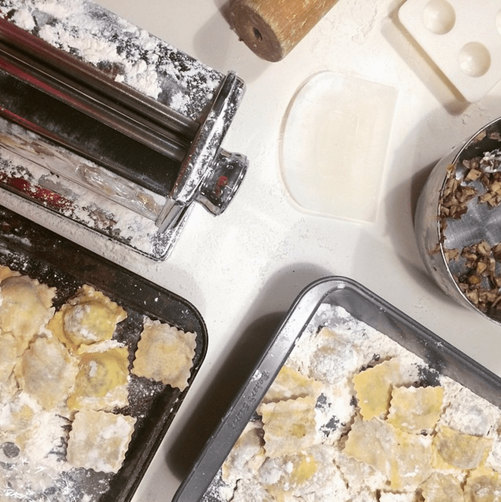
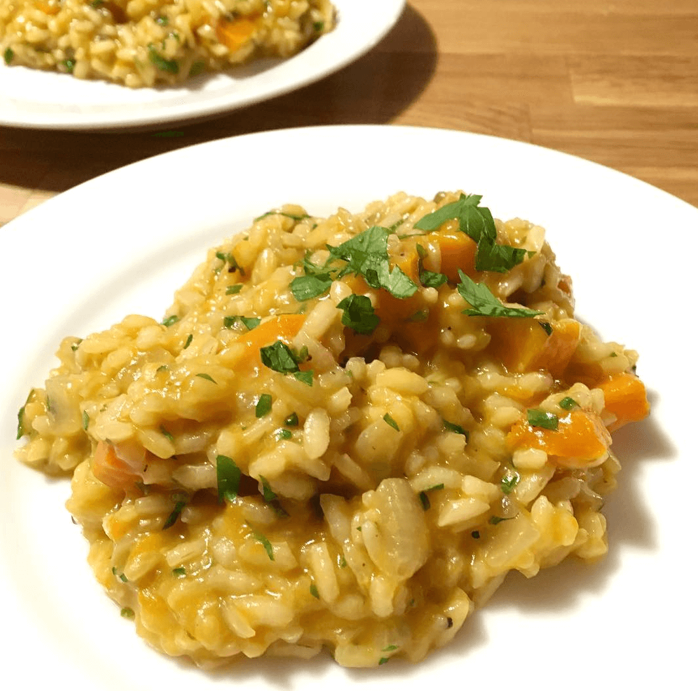

Top Recipe Picks

Cinnamon French Toast
1 hour
alarm

Ravioli
2 Hours
alarm

Butternut Squash Risotto
2 Hours
alarmWhat could be better than waking up and cooking a delicious meal on Saturday mornings.
Here is some inspiration to get started >
1 hour
alarm2 Hours
alarm2 Hours
alarmTired of boring, old PB&J for lunch? Check out these five quick recipes to make lunchtime a little better.
Gumbo beet greens corn soko endive gumbo gourd. Parsley shallot courgette tatsoi pea sprouts fava bean collard greens dandelion okra wakame tomato. Dandelion cucumber earthnut pea peanut soko zucchini.